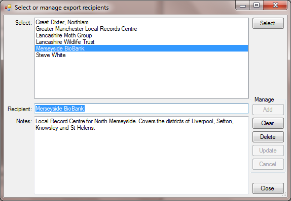

Gilbert 21 - the export recipient dialog
Gilbert 21 stores information about the recipients of exports. This is managed through the export recipient dialog. From the Exports menu item of the Tools menu, select the Manage recipients sub-item to invoke the Select or manage export recipients dialog. The same dialog is also invoked when you click the Add buttons on either the Export records or Manage exports dialogs.

Recipients are listed in the Select list. If the dialog has been invoked from either the Export records or Manage exports dialogs, you can double-click a recipient in this list or select it and then click the Select button. In both cases, the recipient you select will be passed back to the calling dialog. To modify a recipient record, first you must select the recipient and then edit the Recipient field (i.e. the name of the recipient) or the Notes field where you can specify additional information about the recipient. When a recipient has been modified, the Update and Cancel buttons are enabled and you must either click the Update button to commit the edits, or the Cancel button to cancel them.
To enter a new recipient record, first clear the Recipient and Notes text inputs by clicking the Clear button and then specify a new recipient name (it must be unique) and optionally add some notes, then click the Add button. To delete a recipient record, first select it and then click the Delete button. Note you will not be able to delete a recipient if it is reference by any export records. To delete a recipient under these circumstances, you would first need to remove the recipient from all of the export records which reference it by using the Manage exports dialog.
Created with the Personal Edition of HelpNDoc: Produce electronic books easily